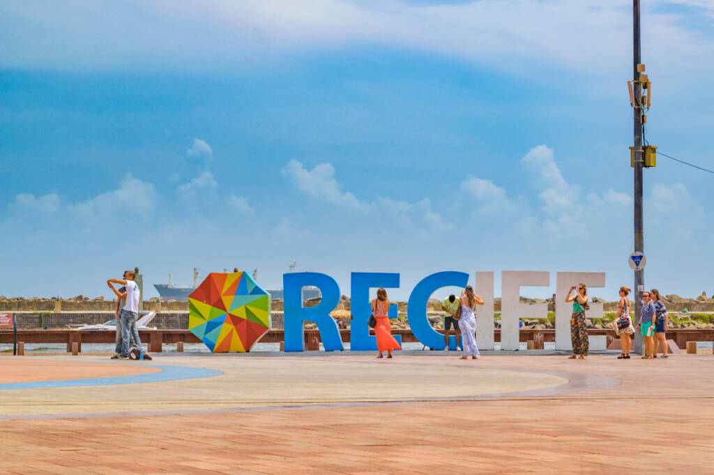
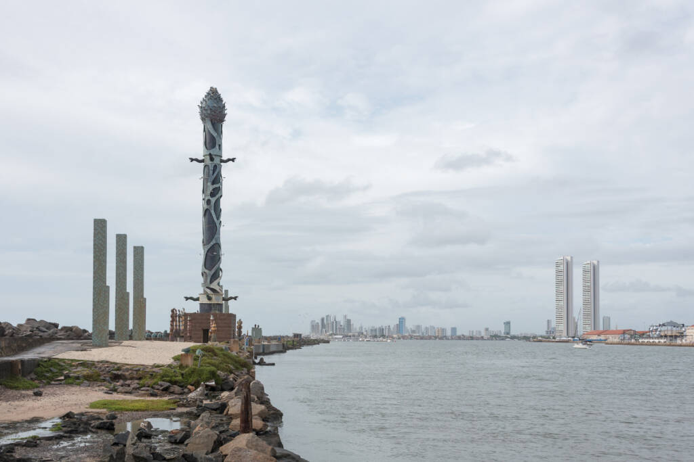

Recife: Marco zero

O Marco Zero no Recife Antigo é um dos pontos turísticos mais importantes para quem deseja conhecer a capital de Pernambuco. Isso porque é um local de importância histórica que conta o nascimento da cidade e possui forte referência cultural. Além disso, o Marco Zero recebe, anualmente, diversas comemorações e manifestações e também é um lugar muito famoso para quem busca eventos como o Carnaval.
A história do Marco Zero no Recife Antigo
O Marco Zero no Recife Antigo é o lugar de referência onde a cidade nasceu e todas as medidas oficiais de distâncias rodoviárias usam como ponto de partida. Seu nome é, na verdade, Praça Rio Branco e fica ao lado do Porto de Pernambuco. Pode-se dizer que ele se situa no centro histórico da cidade, que é mais conhecido como Recife Antigo por ser a parte onde se iniciou o povoamento da capital pernambucana. A popularização do nome Marco Zero aconteceu desde 1938, devido à instalação do símbolo geográfico na parte central da praça. Ele foi uma doação do Automóvel Clube de Pernambuco. Além disso, há nela uma estátua de bronze de 2,80 metros, de autoria do escultor francês Félix Charpentier.
Conheça a arquitetura eclética dos prédios históricos
Desde o período de domínio holandês, entre 1630 e 1654, tanto o Marco Zero do Recife Antigo quanto o bairro como um todo tiveram reformas significativas que aconteceram até o início de 1900. Por isso, a arquitetura do local é bastante eclética. Em resumo, você irá encontrar vitrais com inspiração inglesa, desenhos que remetem ao modernismo, barroco e rococó e escadarias de influência europeia. Três destes prédios se destacam, que são: Antiga sede do London & River Plate Bank: atualmente é sede de uma empresa de informática e existe visita guiada por suas dependências internas; Associação Comercial de Pernambuco: o local abriga um acervo histórico importante sobre o comércio da cidade. Além disso, é possível conferir quadros, vitrais, livros e jornais de outras épocas; Edifício da Caixa Cultural: O prédio teve sua aquisição feita pela Caixa Cultural e atualmente organiza exposições. Anteriormente, foi sede do Bank of London & South America Limited e, em meados de 1960, abrigou a Bolsa de Valores pernambucana.